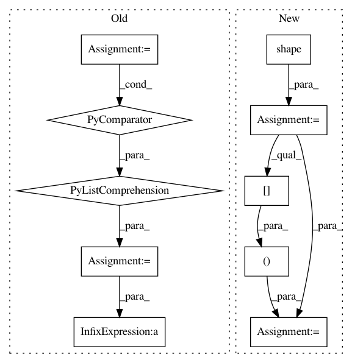

7fd53c15c6273327ef10c2458848fcaf2a85e406,finetune/base_models/gpt2/featurizer.py,,gpt2_featurizer,#Any#Any#Any#Any#Any#,138
Before Change
def gpt2_featurizer(X, encoder, config, train=False, reuse=None):
initial_shape = [a or -1 for a in X.get_shape().as_list()]
X = tf.reshape(X, shape=[-1] + initial_shape[-2:])
with tf.variable_scope("model/featurizer", reuse=reuse):
embed_weights = tf.get_variable(
name="we",
shape=[encoder.vocab_size + config.max_length, config.n_embed],
initializer=tf.random_normal_initializer(stddev=config.weight_stddev)
)
if config.train_embeddings:
embed_weights = dropout(embed_weights, config.embed_p_drop, train)
else:
embed_weights = tf.stop_gradient(embed_weights)
X = tf.reshape(X, [-1, config.max_length, 2])
h = embed(X, embed_weights)
// Transformer
pasts = [None] * config.n_layer
for layer, past in enumerate(pasts):
if (config.n_layer - layer) == config.num_layers_trained and config.num_layers_trained != config.n_layer:
h = tf.stop_gradient(h)
train_layer = False
else:
train_layer = train
with tf.variable_scope("h%d" % layer):
block_fn = functools.partial(block, past=past, hparams=config, train=train)
if config.low_memory_mode and train_layer:
block_fn = recompute_grad(block_fn, use_entire_scope=True)
h = block_fn(h)
h = norm(h, "ln_f")
// Use hidden state at classifier token as input to final proj. + softmax
clf_h = tf.reshape(h, [-1, config.n_embed]) // [batch * seq_len, embed]
clf_token = encoder["_classify_"]
pool_idx = tf.cast(tf.argmax(tf.cast(tf.equal(X[:, :, 0], clf_token), tf.float32), 1), tf.int32)
clf_h = tf.gather(clf_h, tf.range(shape_list(X)[0], dtype=tf.int32) * config.max_length + pool_idx)
clf_h = tf.reshape(clf_h, shape=initial_shape[:-2] + [config.n_embed])
seq_feats = tf.reshape(h, shape=initial_shape[:-1] + [config.n_embed])
return {
"embed_weights": embed_weights,
After Change
def gpt2_featurizer(X, encoder, config, train=False, reuse=None):
initial_shape = tf.shape(X)
X = tf.reshape(X, shape=[-1] + initial_shape[-2:])
X = tf.reshape(X, shape=tf.concat(([-1], initial_shape[-2:]), 0))
with tf.variable_scope("model/featurizer", reuse=reuse):
embed_weights = tf.get_variable(
name="we",
In pattern: SUPERPATTERN
Frequency: 3
Non-data size: 10
Instances
Project Name: IndicoDataSolutions/finetune
Commit Name: 7fd53c15c6273327ef10c2458848fcaf2a85e406
Time: 2019-03-21
Author: benlt@hotmail.co.uk
File Name: finetune/base_models/gpt2/featurizer.py
Class Name:
Method Name: gpt2_featurizer
Project Name: IndicoDataSolutions/finetune
Commit Name: 7fd53c15c6273327ef10c2458848fcaf2a85e406
Time: 2019-03-21
Author: benlt@hotmail.co.uk
File Name: finetune/base_models/gpt/featurizer.py
Class Name:
Method Name: gpt_featurizer
Project Name: stellargraph/stellargraph
Commit Name: 0aa1073c28edff2434b9a4d0fb0657084441a694
Time: 2019-01-09
Author: andrew.docherty@data61.csiro.au
File Name: stellargraph/layer/hinsage.py
Class Name: MeanHinAggregator
Method Name: call